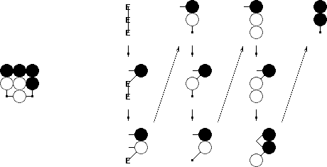

L19 = 208168199381979984699478633344862770286522453884530548425639456820927419612738015378525648451698519643907259916015628128546089888314427129715319317557736620397247064840935
or in more compact form
2081681993819799846 9947863334486277028 6522453884530548425 6394568209274196127 3801537852564845169 8519643907259916015 6281285460898883144 2712971531931755773 6620397247064840935weighing in at 9*19=171 digits. We can write this more naturally in base 3 as the 19*19 ternary digits
0 0 0 0 2 2 2 0 1 1 0 0 2 0 1 1 1 0 1 2 1 1 2 1 2 0 0 2 1 2 1 0 0 0 2 2 0 2 2 1 0 0 2 1 0 1 1 1 1 1 0 1 1 1 1 1 2 0 0 2 2 0 1 1 0 2 0 0 1 2 1 0 2 0 1 0 1 0 2 0 2 0 1 2 0 1 1 2 2 1 0 0 1 2 1 1 0 0 0 1 1 1 2 0 2 2 0 0 0 2 0 1 2 2 0 0 2 1 2 0 0 2 0 0 1 1 1 0 2 0 2 0 0 0 0 2 2 0 2 2 2 0 0 0 2 1 0 1 0 0 0 2 2 1 0 0 2 0 2 2 2 2 1 0 0 2 1 1 1 2 1 2 0 0 1 0 2 2 1 2 1 1 2 2 0 2 0 1 2 0 2 1 1 1 0 0 2 1 0 0 2 2 1 2 2 2 0 1 1 2 2 1 2 0 1 1 1 0 2 0 1 2 0 2 2 2 0 2 2 0 1 0 1 2 1 1 0 1 1 0 2 1 2 0 0 2 1 2 0 0 0 1 2 2 1 1 2 0 2 2 0 0 1 0 1 0 1 1 2 2 0 0 1 2 2 0 2 0 2 0 1 2 2 1 0 2 0 1 0 0 1 1 0 2 1 2 1 2 1 1 0 2 2 0 2 2 1 1 2 0 1 0 2 0 1 2 0 2 1 2 1 0 0 0 0 0 1 1 2 2 1 0 2 1 0 1 0 2 1 1 2 0 2 2 0 2 1 0 2 2 0 0 2 1 1 1 1 1 2 2 2which bears a striking resemblance to the image above.
It should come as no surprise that L19, viewed as a position, is itself illegal. The initial ternary digits show that the probability of a random position being legal is about 0.0000222 in ternary, close to 3^-4, or 1 in 81. This 1.2% chance was already computed by random sampling back in 1992. The approximation
L19 ~ 2.081681994 * 10^170
has been known since 2006. So what took us 10 years to nail it down to the last digit?
Using an ECM implementation courtesy of Dario Alejandro Alpern, I was able to factorize L19 in mere hours on my laptop, yielding 8 prime factors:
5 * 401 * 4821637 * 964261621 * 2824211368611548437 * 2198466965002376001759613307922757 * 65948646836807567941440434317404197 * 54536540603346595211722061421378072820459376985314707345317470047of 1,3,7,9,19,34,35, and 65 digits respectively. The challenge of constructing (rather than deconstructing) L19 is surprisingly similar. Individually testing 3^361 positions for legality is as insane as doing trial divisions. Detecting illegalities early during position generation, as this small program for legal probability approximation does, offers only the slightest improvement. Just as with factoring, we need an advanced algorithm that is exponential not in the number of points, but rather in the square root thereof, the board dimension.
Such an algorithm was developed in the early 2000s, and is described in detail in our paper Combinatorics of Go. It essentially reduces computing L19 to taking the 361st power of a very sparse matrix of 363 billion rows and columns. The computational power required for this only became available to me last year.

L(m,n) ~ 0.8506399258457 * 0.965535059338374^{m+n} * 2.9757341920433572493^{m*n}
derived from earlier results. Finally, application of the Chinese Remainder Theorem provide an important safeguard in that a tiny change in any of the inputs results in a huge change of output.
Click on the left links to find tables for m by n boards.
| n | number of legal n*n positions |
| 1 | 1 |
| 2 | 57 |
| 3 | 12675 |
| 4 | 24318165 |
| 5 | 414295148741 |
| 6 | 62567386502084877 |
| 7 | 83677847847984287628595 |
| 8 | 990966953618170260281935463385 |
| 9 | 103919148791293834318983090438798793469 |
| 10 | 96498428501909654589630887978835098088148177857 |
| 11 | 793474866816582266820936671790189132321673383112185151899 |
| 12 | 57774258489513238998237970307483999327287210756991189655942651331169 |
| 13 | 37249792307686396442294904767024517674249157948208717533254799550970595875237705 |
| 14 | 212667732900366224249789357650440598098805861083269127196623872213228196352455447575029701325 |
| 15 | 10751464308361383118768413754866123809733788820327844402764601662870883601711298309339239868998337801509491 |
| 16 | 4813066963822755416429056022484299646486874100967249263944719599975607459850502222039591149331431805524655467453067042377 |
| 17 | 19079388919628199204605726181850465220151058338147922243967269231944059187214767997105992341735209230667288462179090073659712583262087437 |
| 18 | 669723114288829212892740188841706543509937780640178732810318337696945624428547218105214326012774371397184848890970111836283470468812827907149926502347633 |
| 19 | 208168199381979984699478633344862770286522453884530548425639456820927419612738015378525648451698519643907259916015628128546089888314427129715319317557736620397247064840935 |
The results for n=14,15,16 and 17 were obtained in a joint effort between Michal Koucký and John Tromp.
Many thanks to Gunnar Farnebäck and Michal Koucký for their contributions. Gunnar wrote a legal counting program in pike, while Michal suggested the use of Chinese Remaindering and implemented a file based program.